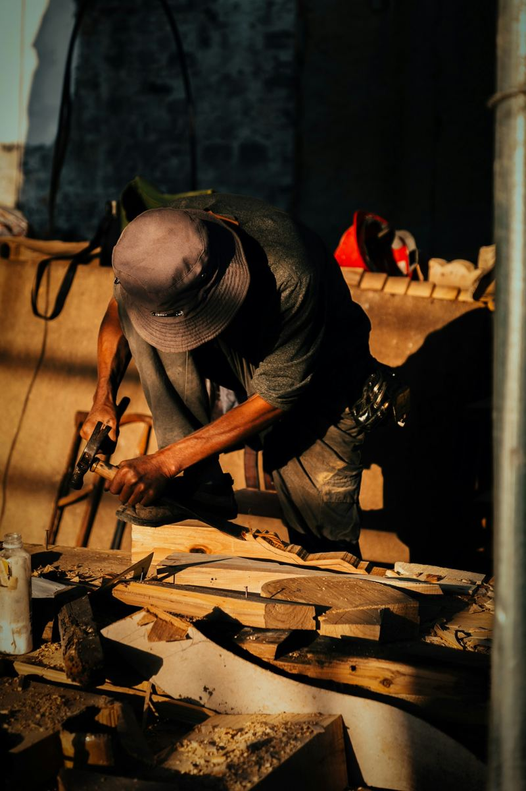
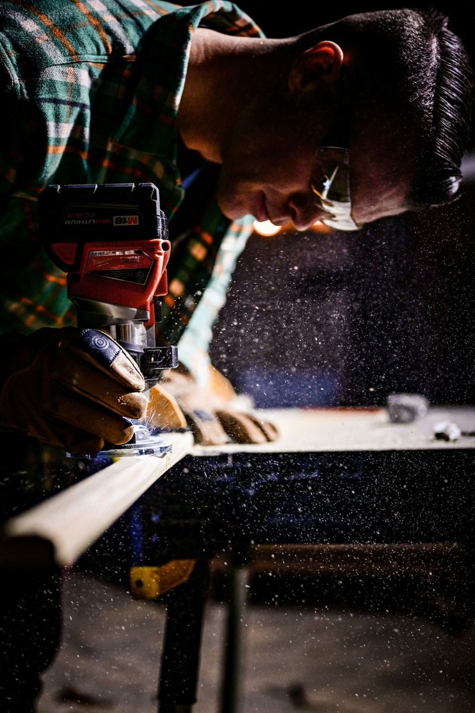
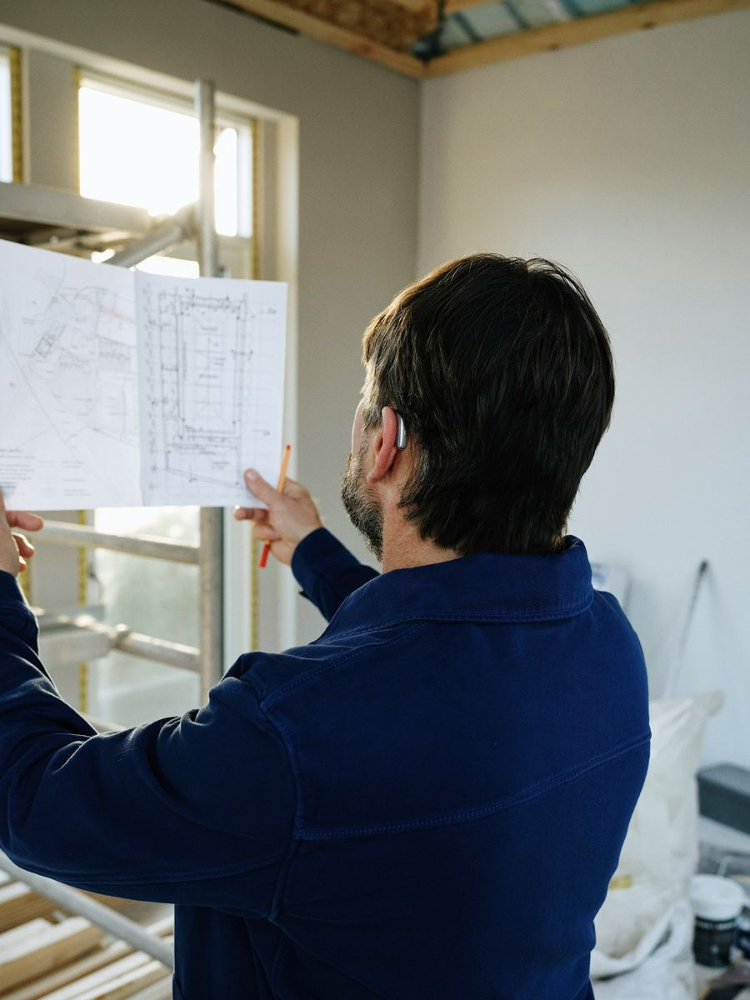

La storia comincia nel lontano 1980 quando Mario decide di aprire un piccolo laboratorio. Con il passare del tempo le commesse aumentano, i clienti tornano perché piace il lavoro di Mario. Ed in men che non si dice Mario è passato da avere solo un collaboratore, ad averne 3, ognuno con una specializzazione diversa.

Primo collaboratore in assoluto di mastro Mario, Giovanni arriva in officina appena uscito dalla scuola. Con la pazienza e la tenacia che lo contraddistinguono, è diventato il braccio destro di Mario.

Con il passare degli anni il mondo corre e Mario si rende conto che i progetti su carta oramai stanno diventando uno strumento vecchio. Bisognava aggiornarsi, ed ecco che entra in gioco Vincenzo. Con la sua capacità di utilizzare il computer porta la bottega in condizioni di competere con le migliori aziende del settore utilizzando le più moderne tecnologie.